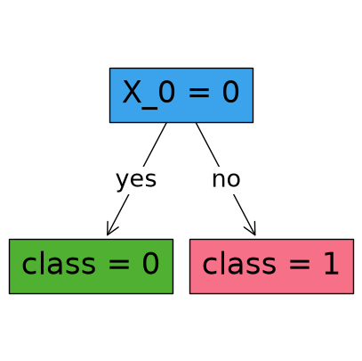
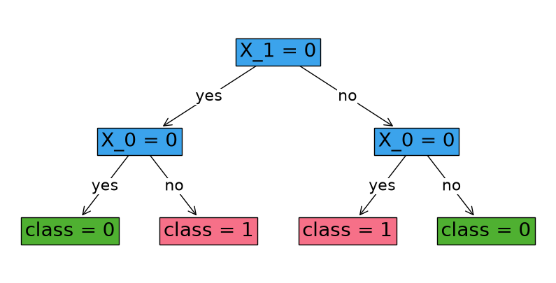
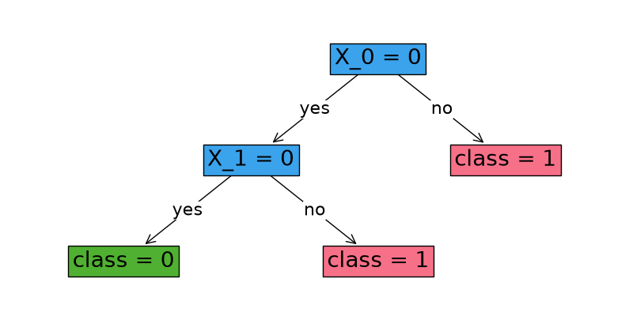
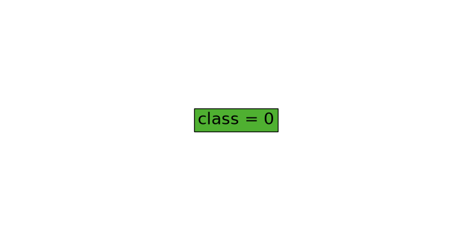
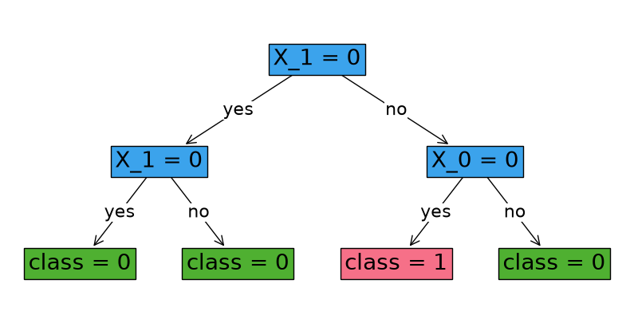
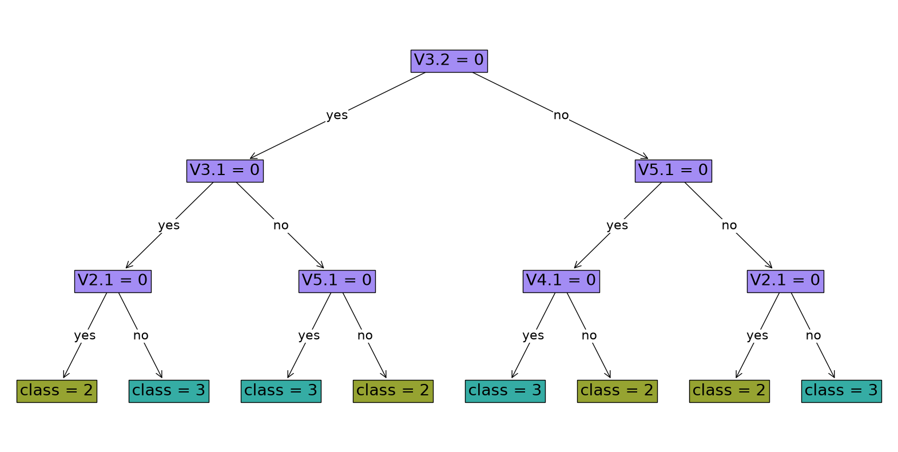
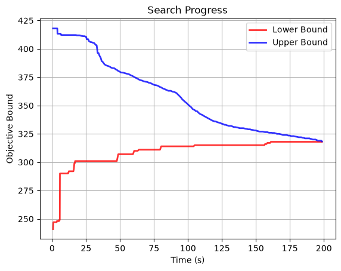
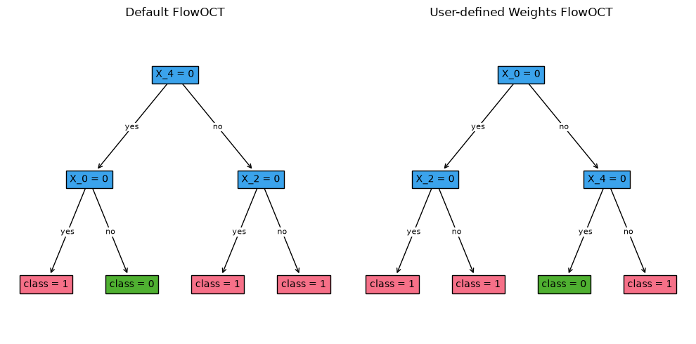
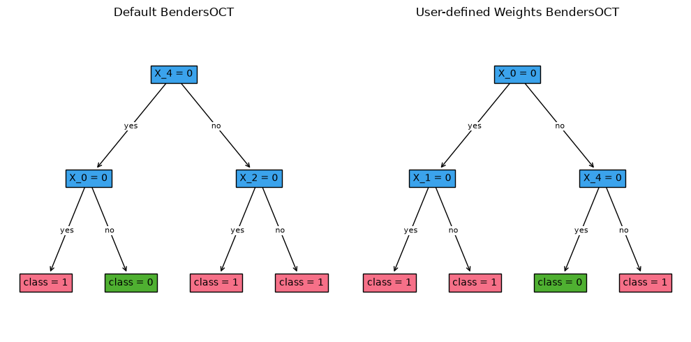

[1]:
import numpy as np
import pandas as pd
import matplotlib.pyplot as plt
from odtlearn.flow_oct import FlowOCT, BendersOCT
from odtlearn.utils.binarize import Binarizer
FlowOCT Examples¶
Example 0: Binarization¶
The following example shows how to binarize a dataset with categorical, integer, and continuous features using the built-in Binarizer class. This class follows the scikit-learn fit-transform paradigm, making it easy to integrate into your preprocessing pipeline.
[2]:
number_of_child_list = [1, 2, 4, 3, 1, 2, 4, 3, 2, 1]
age_list = [10, 20, 40, 30, 10, 20, 40, 30, 20, 10]
race_list = [
"Black",
"White",
"Hispanic",
"Black",
"White",
"Black",
"White",
"Hispanic",
"Black",
"White",
]
sex_list = ["M", "F", "M", "M", "F", "M", "F", "M", "M", "F"]
income_list = [50000, 75000, 100000, 60000, 80000, 55000, 90000, 70000, 85000, 65000]
df = pd.DataFrame(
list(zip(sex_list, race_list, number_of_child_list, age_list, income_list)),
columns=["sex", "race", "num_child", "age", "income"],
)
print(df)
sex race num_child age income
0 M Black 1 10 50000
1 F White 2 20 75000
2 M Hispanic 4 40 100000
3 M Black 3 30 60000
4 F White 1 10 80000
5 M Black 2 20 55000
6 F White 4 40 90000
7 M Hispanic 3 30 70000
8 M Black 2 20 85000
9 F White 1 10 65000
[3]:
binarizer = Binarizer(
categorical_cols=["sex", "race"],
integer_cols=["num_child", "age"],
real_cols=["income"],
n_bins=5 # Number of bins for continuous features
)
# Fit and transform the data
df_enc = binarizer.fit_transform(df)
print(df_enc)
sex_M race_Black race_Hispanic race_White num_child_1 num_child_2 \
0 1.0 1.0 0.0 0.0 1.0 1.0
1 0.0 0.0 0.0 1.0 0.0 1.0
2 1.0 0.0 1.0 0.0 0.0 0.0
3 1.0 1.0 0.0 0.0 0.0 0.0
4 0.0 0.0 0.0 1.0 1.0 1.0
5 1.0 1.0 0.0 0.0 0.0 1.0
6 0.0 0.0 0.0 1.0 0.0 0.0
7 1.0 0.0 1.0 0.0 0.0 0.0
8 1.0 1.0 0.0 0.0 0.0 1.0
9 0.0 0.0 0.0 1.0 1.0 1.0
num_child_3 num_child_4 age_10 age_20 age_30 age_40 income_0 \
0 1.0 1.0 1.0 1.0 1.0 1.0 1.0
1 1.0 1.0 0.0 1.0 1.0 1.0 0.0
2 0.0 1.0 0.0 0.0 0.0 1.0 0.0
3 1.0 1.0 0.0 0.0 1.0 1.0 0.0
4 1.0 1.0 1.0 1.0 1.0 1.0 0.0
5 1.0 1.0 0.0 1.0 1.0 1.0 1.0
6 0.0 1.0 0.0 0.0 0.0 1.0 0.0
7 1.0 1.0 0.0 0.0 1.0 1.0 0.0
8 1.0 1.0 0.0 1.0 1.0 1.0 0.0
9 1.0 1.0 1.0 1.0 1.0 1.0 0.0
income_1 income_2 income_3 income_4
0 1.0 1.0 1.0 1.0
1 0.0 1.0 1.0 1.0
2 0.0 0.0 0.0 1.0
3 1.0 1.0 1.0 1.0
4 0.0 0.0 1.0 1.0
5 1.0 1.0 1.0 1.0
6 0.0 0.0 0.0 1.0
7 0.0 1.0 1.0 1.0
8 0.0 0.0 1.0 1.0
9 1.0 1.0 1.0 1.0
The Binarizer class follows the scikit-learn fit-transform paradigm:
We initialize the Binarizer with our desired parameters, specifying which columns are categorical, integer, and real-valued. We call the fit_transform method, which first fits the binarizer to our data (learning the necessary encoding schemes) and then transforms the data using those learned encodings.
The resulting df_enc DataFrame contains the binarized version of our original data:
Categorical columns (sex, race) are one-hot encoded. Integer columns (num_child, age) are binary encoded, where each column represents “greater than or equal to” a certain value. The continuous column (income) is first discretized into 5 bins, then binary encoded similar to the integer columns.
[4]:
print(df_enc.columns)
Index(['sex_M', 'race_Black', 'race_Hispanic', 'race_White', 'num_child_1',
'num_child_2', 'num_child_3', 'num_child_4', 'age_10', 'age_20',
'age_30', 'age_40', 'income_0', 'income_1', 'income_2', 'income_3',
'income_4'],
dtype='str')
This binarized data is now ready to be used with any of the models in ODTlearn, which require binary input features. If you need to transform new data using the same encoding scheme, you can use the transform method of the fitted binarizer:
[5]:
new_data = pd.DataFrame({
"sex": ["F", "M"],
"race": ["Hispanic", "White"],
"num_child": [2, 3],
"age": [20, 30],
"income": [70000, 80000]
})
new_data_enc = binarizer.transform(new_data)
print(new_data_enc)
sex_M race_Black race_Hispanic race_White num_child_1 num_child_2 \
0 0.0 0.0 1.0 0.0 0.0 1.0
1 1.0 0.0 0.0 1.0 0.0 0.0
num_child_3 num_child_4 age_10 age_20 age_30 age_40 income_0 \
0 1.0 1.0 0.0 1.0 1.0 1.0 0
1 1.0 1.0 0.0 0.0 1.0 1.0 0
income_1 income_2 income_3 income_4
0 0 1.0 1.0 0
1 0 0.0 1.0 0
Note that for categorical features, if the new data contains categories not seen during fitting, the transform method will raise an error. In such cases, you might need to refit the binarizer on a dataset that includes all possible categories.
Example 1: Varying depth and _lambda¶
In this part, we study a simple example and investigate different parameter combinations to provide intuition on how they affect the structure of the tree.
First we generate the data for our example. The diagram within the code block shows the training dataset. Our dataset has two binary features (X1 and X2) and two class labels (+1 and -1).
[6]:
from odtlearn.datasets import flow_oct_example
"""
X2
| |
| |
1 + + | -
| |
|---------------|-------------
| |
0 - - - - | + + +
| - - - |
|______0________|_______1_______X1
"""
X, y = flow_oct_example()
Tree with depth = 1¶
In the following, we fit a classification tree of depth 1, i.e., a tree with a single branching node and two leaf nodes.
[7]:
stcl = FlowOCT(depth=1, solver="gurobi", time_limit=100)
stcl.fit(X, y)
Restricted license - for non-production use only - expires 2027-11-29
Set parameter TimeLimit to value 100
Gurobi Optimizer version 13.0.2 build v13.0.2rc1 (linux64 - "Ubuntu 24.04.4 LTS")
CPU model: AMD EPYC 9V74 80-Core Processor, instruction set [SSE2|AVX|AVX2]
Thread count: 2 physical cores, 4 logical processors, using up to 4 threads
Non-default parameters:
TimeLimit 100
Optimize a model with 110 rows, 89 columns and 250 nonzeros (Max)
Model fingerprint: 0x5e9209d1
Model has 13 linear objective coefficients
Variable types: 84 continuous, 5 integer (5 binary)
Coefficient statistics:
Matrix range [1e+00, 1e+00]
Objective range [1e+00, 1e+00]
Bounds range [1e+00, 1e+00]
RHS range [1e+00, 1e+00]
Presolve removed 105 rows and 83 columns
Presolve time: 0.00s
Presolved: 5 rows, 6 columns, 13 nonzeros
Variable types: 3 continuous, 3 integer (3 binary)
Found heuristic solution: objective 10.0000000
Explored 0 nodes (0 simplex iterations) in 0.01 seconds (0.00 work units)
Thread count was 4 (of 4 available processors)
Solution count 1: 10
Optimal solution found (tolerance 1.00e-04)
Best objective 1.000000000000e+01, best bound 1.000000000000e+01, gap 0.0000%
[7]:
FlowOCT(solver=gurobi,depth=1,time_limit=100,num_threads=None,verbose=False)
[8]:
predictions = stcl.predict(X)
print(f'Optimality gap is {stcl.optim_gap}')
print(f"In-sample accuracy is {np.sum(predictions==y)/y.shape[0]}")
Optimality gap is 0.0
In-sample accuracy is 0.7692307692307693
Users can access statistics from the optimization run such as optimality gap, number of nodes, number of constraints, etc. Directly as properties of the initialized class or through the _solver object. For example, one can access the optimality gap and the number of solutions after fitting the optimal decision tree through the optim_gap and num_solutions properties.
[9]:
print(f'Optimality gap is {stcl.optim_gap}')
print(f'Number of solutions {stcl.num_solutions}')
Optimality gap is 0.0
Number of solutions 1
As we can see above, we find the optimal tree and the in-sample accuracy is 76%.
ODTlearn provides two different ways of visualizing the structure of the tree. The first method prints the structure of the tree in the console:
[10]:
stcl.print_tree()
#########node 1
branch on X_0
#########node 2
leaf 0
#########node 3
leaf 1
The second method plots the structure of the tree using matplotlib:
[11]:
fig, ax = plt.subplots(figsize=(5, 5))
stcl.plot_tree(ax=ax)
plt.show()

[12]:
stcl_progress_log = FlowOCT(depth=1, solver="gurobi", time_limit=100)
stcl_progress_log.fit(X, y)
Set parameter TimeLimit to value 100
Gurobi Optimizer version 13.0.2 build v13.0.2rc1 (linux64 - "Ubuntu 24.04.4 LTS")
CPU model: AMD EPYC 9V74 80-Core Processor, instruction set [SSE2|AVX|AVX2]
Thread count: 2 physical cores, 4 logical processors, using up to 4 threads
Non-default parameters:
TimeLimit 100
Optimize a model with 110 rows, 89 columns and 250 nonzeros (Max)
Model fingerprint: 0x5e9209d1
Model has 13 linear objective coefficients
Variable types: 84 continuous, 5 integer (5 binary)
Coefficient statistics:
Matrix range [1e+00, 1e+00]
Objective range [1e+00, 1e+00]
Bounds range [1e+00, 1e+00]
RHS range [1e+00, 1e+00]
Presolve removed 105 rows and 83 columns
Presolve time: 0.00s
Presolved: 5 rows, 6 columns, 13 nonzeros
Variable types: 3 continuous, 3 integer (3 binary)
Found heuristic solution: objective 10.0000000
Explored 0 nodes (0 simplex iterations) in 0.01 seconds (0.00 work units)
Thread count was 4 (of 4 available processors)
Solution count 1: 10
Optimal solution found (tolerance 1.00e-04)
Best objective 1.000000000000e+01, best bound 1.000000000000e+01, gap 0.0000%
[12]:
FlowOCT(solver=gurobi,depth=1,time_limit=100,num_threads=None,verbose=False)
Tree with depth = 2¶
Now we increase the depth of the tree to achieve higher accuracy.
[13]:
stcl = FlowOCT(depth=2, solver="gurobi")
stcl.fit(X, y)
Set parameter TimeLimit to value 60
Gurobi Optimizer version 13.0.2 build v13.0.2rc1 (linux64 - "Ubuntu 24.04.4 LTS")
CPU model: AMD EPYC 9V74 80-Core Processor, instruction set [SSE2|AVX|AVX2]
Thread count: 2 physical cores, 4 logical processors, using up to 4 threads
Non-default parameters:
TimeLimit 60
Optimize a model with 274 rows, 209 columns and 642 nonzeros (Max)
Model fingerprint: 0x51470803
Model has 13 linear objective coefficients
Variable types: 196 continuous, 13 integer (13 binary)
Coefficient statistics:
Matrix range [1e+00, 1e+00]
Objective range [1e+00, 1e+00]
Bounds range [1e+00, 1e+00]
RHS range [1e+00, 1e+00]
Found heuristic solution: objective -0.0000000
Presolve removed 251 rows and 184 columns
Presolve time: 0.00s
Presolved: 23 rows, 25 columns, 74 nonzeros
Found heuristic solution: objective 8.0000000
Variable types: 18 continuous, 7 integer (7 binary)
Root relaxation: objective 1.300000e+01, 18 iterations, 0.00 seconds (0.00 work units)
Nodes | Current Node | Objective Bounds | Work
Expl Unexpl | Obj Depth IntInf | Incumbent BestBd Gap | It/Node Time
* 0 0 0 13.0000000 13.00000 0.00% - 0s
Explored 1 nodes (18 simplex iterations) in 0.01 seconds (0.00 work units)
Thread count was 4 (of 4 available processors)
Solution count 3: 13 8 -0
Optimal solution found (tolerance 1.00e-04)
Best objective 1.300000000000e+01, best bound 1.300000000000e+01, gap 0.0000%
[13]:
FlowOCT(solver=gurobi,depth=2,time_limit=60,num_threads=None,verbose=False)
[14]:
predictions = stcl.predict(X)
print(f"In-sample accuracy is {np.sum(predictions==y)/y.shape[0]}")
In-sample accuracy is 1.0
As we can see, with depth 2, we can achieve 100% in-sample accuracy.
[15]:
fig, ax = plt.subplots(figsize=(10, 5))
stcl.plot_tree(ax=ax, fontsize=20)
plt.show()

Tree with depth=2 and Positive _lambda¶
As we saw in the above example, with depth 2, we can fully classify the training data. However if we add a regularization term with a high enough value of _lambda, we can justify pruning one of the branching nodes to get a sparser tree. In the following, we observe that as we increase _lambda from 0 to 0.51, one of the branching nodes gets pruned and as a result, the in-sample accuracy drops to 92%.
[16]:
stcl = FlowOCT(solver="gurobi", depth=2, _lambda=0.51)
stcl.fit(X, y)
Set parameter TimeLimit to value 60
Gurobi Optimizer version 13.0.2 build v13.0.2rc1 (linux64 - "Ubuntu 24.04.4 LTS")
CPU model: AMD EPYC 9V74 80-Core Processor, instruction set [SSE2|AVX|AVX2]
Thread count: 2 physical cores, 4 logical processors, using up to 4 threads
Non-default parameters:
TimeLimit 60
Optimize a model with 274 rows, 209 columns and 642 nonzeros (Max)
Model fingerprint: 0x3e3f455b
Model has 19 linear objective coefficients
Variable types: 196 continuous, 13 integer (13 binary)
Coefficient statistics:
Matrix range [1e+00, 1e+00]
Objective range [5e-01, 5e-01]
Bounds range [1e+00, 1e+00]
RHS range [1e+00, 1e+00]
Found heuristic solution: objective -0.0000000
Presolve removed 251 rows and 184 columns
Presolve time: 0.00s
Presolved: 23 rows, 25 columns, 74 nonzeros
Found heuristic solution: objective 3.9200000
Variable types: 18 continuous, 7 integer (7 binary)
Root relaxation: objective 5.105000e+00, 23 iterations, 0.00 seconds (0.00 work units)
Nodes | Current Node | Objective Bounds | Work
Expl Unexpl | Obj Depth IntInf | Incumbent BestBd Gap | It/Node Time
0 0 5.10500 0 3 3.92000 5.10500 30.2% - 0s
H 0 0 4.8600000 5.10500 5.04% - 0s
Explored 1 nodes (23 simplex iterations) in 0.01 seconds (0.00 work units)
Thread count was 4 (of 4 available processors)
Solution count 3: 4.86 3.92 -0
Optimal solution found (tolerance 1.00e-04)
Best objective 4.860000000000e+00, best bound 4.860000000000e+00, gap 0.0000%
[16]:
FlowOCT(solver=gurobi,depth=2,time_limit=60,num_threads=None,verbose=False)
[17]:
predictions = stcl.predict(X)
print(f"In-sample accuracy is {np.sum(predictions==y)/y.shape[0]}")
In-sample accuracy is 0.9230769230769231
[18]:
fig, ax = plt.subplots(figsize=(10, 5))
stcl.plot_tree(ax=ax, fontsize=20)
plt.show()

Example 2: Different Objective Functions¶
In the following, we have a toy example with an imbalanced data, with the positive class being the minority class.
[19]:
'''
X2
| |
| |
1 + - - | -
| |
|---------------|--------------
| |
0 - - - + | - - -
| - - - - |
|______0________|_______1_______X1
'''
X = np.array([[0,0],[0,0],[0,0],[0,0],[0,0],[0,0],[0,0],[0,0],
[1,0],[1,0],[1,0],
[1,1],
[0,1],[0,1],[0,1]])
y = np.array([0,0,0,0,0,0,0,1,
0,0,0,
0,
1,0,0])
Tree with classification accuracy objective¶
[20]:
stcl_acc = FlowOCT(solver="gurobi", depth=2, obj_mode="acc")
stcl_acc.fit(X, y)
Set parameter TimeLimit to value 60
Gurobi Optimizer version 13.0.2 build v13.0.2rc1 (linux64 - "Ubuntu 24.04.4 LTS")
CPU model: AMD EPYC 9V74 80-Core Processor, instruction set [SSE2|AVX|AVX2]
Thread count: 2 physical cores, 4 logical processors, using up to 4 threads
Non-default parameters:
TimeLimit 60
Optimize a model with 314 rows, 237 columns and 734 nonzeros (Max)
Model fingerprint: 0xa5b9a46b
Model has 15 linear objective coefficients
Variable types: 224 continuous, 13 integer (13 binary)
Coefficient statistics:
Matrix range [1e+00, 1e+00]
Objective range [1e+00, 1e+00]
Bounds range [1e+00, 1e+00]
RHS range [1e+00, 1e+00]
Found heuristic solution: objective -0.0000000
Presolve removed 267 rows and 202 columns
Presolve time: 0.00s
Presolved: 47 rows, 35 columns, 141 nonzeros
Found heuristic solution: objective 13.0000000
Variable types: 27 continuous, 8 integer (8 binary)
Root relaxation: objective 1.400000e+01, 32 iterations, 0.00 seconds (0.00 work units)
Nodes | Current Node | Objective Bounds | Work
Expl Unexpl | Obj Depth IntInf | Incumbent BestBd Gap | It/Node Time
0 0 14.00000 0 3 13.00000 14.00000 7.69% - 0s
0 0 14.00000 0 5 13.00000 14.00000 7.69% - 0s
0 0 14.00000 0 5 13.00000 14.00000 7.69% - 0s
0 0 13.83333 0 6 13.00000 13.83333 6.41% - 0s
0 0 13.66667 0 5 13.00000 13.66667 5.13% - 0s
0 0 13.66667 0 5 13.00000 13.66667 5.13% - 0s
0 0 13.33333 0 5 13.00000 13.33333 2.56% - 0s
0 0 13.33333 0 5 13.00000 13.33333 2.56% - 0s
0 0 13.33333 0 5 13.00000 13.33333 2.56% - 0s
0 2 13.33333 0 5 13.00000 13.33333 2.56% - 0s
Cutting planes:
Gomory: 1
MIR: 1
Flow cover: 1
BQP: 5
Explored 3 nodes (60 simplex iterations) in 0.03 seconds (0.00 work units)
Thread count was 4 (of 4 available processors)
Solution count 2: 13 -0
Optimal solution found (tolerance 1.00e-04)
Best objective 1.300000000000e+01, best bound 1.300000000000e+01, gap 0.0000%
[20]:
FlowOCT(solver=gurobi,depth=2,time_limit=60,num_threads=None,verbose=False)
[21]:
predictions = stcl_acc.predict(X)
print(f"In-sample accuracy is {np.sum(predictions==y)/y.shape[0]}")
In-sample accuracy is 0.8666666666666667
[22]:
stcl_acc.print_tree()
#########node 1
leaf 0
#########node 2
pruned
#########node 3
pruned
#########node 4
pruned
#########node 5
pruned
#########node 6
pruned
#########node 7
pruned
[23]:
fig, ax = plt.subplots(figsize=(10, 5))
stcl_acc.plot_tree(ax=ax, fontsize=20)
plt.show()

Tree with Balanced Classification Accuracy Objective¶
[24]:
stcl_balance = FlowOCT(
solver="gurobi",
depth=2,
obj_mode="balance",
_lambda=0,
verbose=False,
)
stcl_balance.fit(X, y)
predictions = stcl_balance.predict(X)
print(f"In-sample accuracy is {np.sum(predictions==y)/y.shape[0]}")
Set parameter TimeLimit to value 60
Gurobi Optimizer version 13.0.2 build v13.0.2rc1 (linux64 - "Ubuntu 24.04.4 LTS")
CPU model: AMD EPYC 9V74 80-Core Processor, instruction set [SSE2|AVX|AVX2]
Thread count: 2 physical cores, 4 logical processors, using up to 4 threads
Non-default parameters:
TimeLimit 60
Optimize a model with 314 rows, 237 columns and 734 nonzeros (Max)
Model fingerprint: 0x3bc6df12
Model has 15 linear objective coefficients
Variable types: 224 continuous, 13 integer (13 binary)
Coefficient statistics:
Matrix range [1e+00, 1e+00]
Objective range [4e-02, 2e-01]
Bounds range [1e+00, 1e+00]
RHS range [1e+00, 1e+00]
Found heuristic solution: objective -0.0000000
Presolve removed 267 rows and 202 columns
Presolve time: 0.00s
Presolved: 47 rows, 35 columns, 141 nonzeros
Found heuristic solution: objective 0.5000000
Variable types: 27 continuous, 8 integer (8 binary)
Root relaxation: objective 7.500000e-01, 34 iterations, 0.00 seconds (0.00 work units)
Nodes | Current Node | Objective Bounds | Work
Expl Unexpl | Obj Depth IntInf | Incumbent BestBd Gap | It/Node Time
0 0 0.75000 0 3 0.50000 0.75000 50.0% - 0s
H 0 0 0.6730769 0.75000 11.4% - 0s
0 0 0.75000 0 5 0.67308 0.75000 11.4% - 0s
0 0 0.75000 0 3 0.67308 0.75000 11.4% - 0s
0 0 0.74519 0 4 0.67308 0.74519 10.7% - 0s
0 0 0.72436 0 5 0.67308 0.72436 7.62% - 0s
0 0 0.70673 0 6 0.67308 0.70673 5.00% - 0s
0 0 0.68590 0 3 0.67308 0.68590 1.90% - 0s
0 0 0.68590 0 3 0.67308 0.68590 1.90% - 0s
0 0 0.68590 0 3 0.67308 0.68590 1.90% - 0s
Cutting planes:
Gomory: 2
MIR: 5
Flow cover: 1
RLT: 1
BQP: 3
Explored 1 nodes (67 simplex iterations) in 0.03 seconds (0.00 work units)
Thread count was 4 (of 4 available processors)
Solution count 3: 0.673077 0.5 -0
No other solutions better than 0.673077
Optimal solution found (tolerance 1.00e-04)
Best objective 6.730769230769e-01, best bound 6.730769230769e-01, gap 0.0000%
In-sample accuracy is 0.8
[25]:
fig, ax = plt.subplots(figsize=(10, 5))
stcl_balance.plot_tree(ax=ax, fontsize=20)
plt.show()

As we can see, when we maximize accuracy, i.e., when obj_mode = 'acc', the optimal tree is just a single node without branching, predicting the majority class for the whole dataset. But when we change the objective mode to balanced accuracy, we account for the minority class by sacrificing the overal accuracy.
Example 3: UCI Data Example¶
In this section, we fit a tree of depth 3 on a real world dataset called the `balance dataset <https://archive.ics.uci.edu/ml/datasets/Balance+Scale>`__ from the UCI Machine Learning repository.
[26]:
import pandas as pd
from sklearn.model_selection import train_test_split
from odtlearn.datasets import balance_scale_data
[27]:
# read data
data = balance_scale_data()
print(f"shape{data.shape}")
data.columns
shape(625, 21)
[27]:
Index(['V2.1', 'V2.2', 'V2.3', 'V2.4', 'V2.5', 'V3.1', 'V3.2', 'V3.3', 'V3.4',
'V3.5', 'V4.1', 'V4.2', 'V4.3', 'V4.4', 'V4.5', 'V5.1', 'V5.2', 'V5.3',
'V5.4', 'V5.5', 'target'],
dtype='str')
[28]:
y = data.pop("target")
X_train, X_test, y_train, y_test = train_test_split(
data, y, test_size=0.33, random_state=42
)
[29]:
stcl = BendersOCT(solver="gurobi", depth=3, time_limit=200, obj_mode="acc", verbose=True)
stcl.store_search_progress_log = True
stcl.fit(X_train, y_train)
Restricted license - for non-production use only - expires 2027-11-29
Set parameter TimeLimit to value 200
Set parameter LazyConstraints to value 1
Gurobi Optimizer version 13.0.2 build v13.0.2rc1 (linux64 - "Ubuntu 24.04.4 LTS")
CPU model: AMD EPYC 9V74 80-Core Processor, instruction set [SSE2|AVX|AVX2]
Thread count: 2 physical cores, 4 logical processors, using up to 4 threads
Non-default parameters:
TimeLimit 200
LazyConstraints 1
Optimize a model with 30 rows, 618 columns and 249 nonzeros (Max)
Model fingerprint: 0xaeff5467
Model has 418 linear objective coefficients
Variable types: 463 continuous, 155 integer (155 binary)
Coefficient statistics:
Matrix range [1e+00, 1e+00]
Objective range [1e+00, 1e+00]
Bounds range [1e+00, 1e+00]
RHS range [1e+00, 1e+00]
Presolve removed 8 rows and 8 columns
Presolve time: 0.00s
Presolved: 22 rows, 610 columns, 233 nonzeros
Variable types: 463 continuous, 147 integer (147 binary)
Root relaxation: objective 4.180000e+02, 61 iterations, 0.00 seconds (0.00 work units)
Nodes | Current Node | Objective Bounds | Work
Expl Unexpl | Obj Depth IntInf | Incumbent BestBd Gap | It/Node Time
0 0 418.00000 0 9 - 418.00000 - - 0s
H 0 0 241.0000000 418.00000 73.4% - 0s
0 0 418.00000 0 9 241.00000 418.00000 73.4% - 0s
0 0 418.00000 0 9 241.00000 418.00000 73.4% - 0s
H 0 0 247.0000000 418.00000 69.2% - 0s
0 2 418.00000 0 4 247.00000 418.00000 69.2% - 0s
H 296 277 248.0000000 418.00000 68.5% 66.1 3s
618 566 350.33333 15 14 248.00000 413.40000 66.7% 65.5 5s
H 648 591 249.0000000 413.40000 66.0% 67.4 5s
* 820 624 72 290.0000000 413.40000 42.6% 66.9 5s
1065 755 405.50000 37 11 290.00000 412.20000 42.1% 85.8 10s
H 1370 873 291.0000000 412.20000 41.6% 98.3 11s
H 1425 868 292.0000000 412.20000 41.2% 100 12s
1844 1047 385.47333 25 11 292.00000 412.20000 41.2% 104 15s
H 1889 1026 294.0000000 412.20000 40.2% 104 15s
H 1893 973 299.0000000 412.20000 37.9% 105 16s
H 1944 952 301.0000000 412.20000 36.9% 108 16s
2372 1136 352.83333 35 17 301.00000 411.92795 36.9% 113 20s
3275 1815 312.00000 50 8 301.00000 410.39643 36.3% 117 25s
6544 3838 318.00000 46 17 301.00000 405.36447 34.7% 89.4 30s
9214 5527 344.60000 24 19 301.00000 391.50000 30.1% 86.1 35s
12312 7140 cutoff 30 301.00000 385.01515 27.9% 80.0 40s
14934 8469 314.00000 46 12 301.00000 383.00000 27.2% 76.6 45s
*16643 8155 64 306.0000000 381.45946 24.7% 74.6 47s
*16700 7903 96 307.0000000 381.45946 24.3% 74.4 47s
18099 8561 329.22222 49 16 307.00000 379.25000 23.5% 73.2 50s
20439 9725 331.16667 35 17 307.00000 378.01136 23.1% 72.2 55s
*23818 9853 47 310.0000000 375.16667 21.0% 70.1 59s
23873 9998 317.90000 50 14 310.00000 375.16667 21.0% 70.1 60s
H25647 10095 311.0000000 373.57143 20.1% 69.8 63s
26673 10600 328.65385 35 15 311.00000 372.20000 19.7% 69.6 65s
29263 11424 321.50000 45 10 311.00000 370.51250 19.1% 69.5 70s
31667 12190 320.83333 29 12 311.00000 368.14286 18.4% 70.1 75s
*34058 11550 83 314.0000000 366.21053 16.6% 70.2 79s
34235 11575 327.77273 35 17 314.00000 366.00000 16.6% 70.2 80s
36443 11971 321.00000 44 12 314.00000 363.00000 15.6% 70.8 85s
38186 12331 319.00000 51 15 314.00000 361.50000 15.1% 71.3 90s
41123 13038 322.00000 45 5 314.00000 355.50000 13.2% 70.9 95s
44819 13803 cutoff 41 314.00000 350.00000 11.5% 69.4 100s
*48082 13666 68 315.0000000 346.40000 10.0% 67.8 104s
49111 13813 322.66667 45 12 315.00000 345.00000 9.52% 67.3 105s
53085 14656 cutoff 47 315.00000 341.65000 8.46% 65.5 110s
57031 15196 cutoff 38 315.00000 338.50000 7.46% 64.2 115s
61773 15987 318.00000 56 8 315.00000 335.95186 6.65% 62.5 120s
66350 16559 326.50000 50 6 315.00000 333.80000 5.97% 61.2 125s
70695 17105 cutoff 38 315.00000 332.00000 5.40% 60.1 130s
76272 17959 cutoff 45 315.00000 330.85000 5.03% 58.6 135s
80752 18651 cutoff 34 315.00000 330.00000 4.76% 57.6 140s
85760 19323 cutoff 46 315.00000 329.00000 4.44% 56.4 145s
90619 19436 323.62500 51 11 315.00000 328.00000 4.13% 55.4 150s
96381 19402 316.73684 61 10 315.00000 326.81250 3.75% 54.3 155s
*97503 18145 58 316.0000000 326.62500 3.36% 54.0 156s
H97983 16273 317.0000000 326.50000 3.00% 53.9 157s
99470 16245 324.90891 60 14 317.00000 326.00000 2.84% 53.6 160s
H99626 14324 318.0000000 326.00000 2.52% 53.5 160s
103375 13738 cutoff 55 318.00000 325.00000 2.20% 52.8 165s
108804 13162 321.05000 50 13 318.00000 324.00000 1.89% 51.7 170s
113333 12625 cutoff 56 318.00000 323.48880 1.73% 50.9 175s
119646 11374 318.50000 46 16 318.00000 322.42857 1.39% 49.6 180s
127117 9481 cutoff 59 318.00000 321.44444 1.08% 48.0 185s
133614 7473 320.63057 73 11 318.00000 320.66667 0.84% 46.8 190s
140603 3532 cutoff 37 318.00000 319.22509 0.39% 45.5 195s
Cutting planes:
Gomory: 1
MIR: 6
Flow cover: 1
Explored 146356 nodes (6496090 simplex iterations) in 198.61 seconds (309.07 work units)
Thread count was 4 (of 4 available processors)
Solution count 10: 318 317 316 ... 301
Optimal solution found (tolerance 1.00e-04)
Best objective 3.180000000000e+02, best bound 3.180000000000e+02, gap 0.0000%
User-callback calls 305886, time in user-callback 6.22 sec
[29]:
BendersOCT(solver=gurobi,depth=3,time_limit=200,num_threads=None,verbose=True)
[30]:
stcl.print_tree()
#########node 1
branch on V3.2
#########node 2
branch on V3.1
#########node 3
branch on V5.1
#########node 4
branch on V2.1
#########node 5
branch on V5.1
#########node 6
branch on V4.1
#########node 7
branch on V2.1
#########node 8
leaf 2
#########node 9
leaf 3
#########node 10
leaf 3
#########node 11
leaf 2
#########node 12
leaf 3
#########node 13
leaf 2
#########node 14
leaf 2
#########node 15
leaf 3
[31]:
fig, ax = plt.subplots(figsize=(20, 10))
stcl.plot_tree(ax=ax, fontsize=20, color_dict={"node": None, "leaves": []})
plt.show()

[32]:
test_pred = stcl.predict(X_test)
print('The out-of-sample accuracy is {}'.format(np.sum(test_pred==y_test)/y_test.shape[0]))
The out-of-sample accuracy is 0.6859903381642513
We also provide a simple function allowing users to plot the search progress log over time. Note that you must set the attribute store_search_progress_log to True before calling the fit method to ensure that the bound information is stored.
[33]:
stcl.plot_search_progress()
[33]:
<Axes: title={'center': 'Search Progress'}, xlabel='Time (s)', ylabel='Objective Bound'>

Example 4: User-defined Weights¶
In this example, we’ll demonstrate how to use user-defined weights with FlowOCT and BendersOCT. We’ll use a small binary classification dataset and show how user-defined weights can affect the learned tree.
First, let’s create our small binary classification dataset:
[34]:
np.random.seed(42)
X = np.random.randint(0, 2, size=(20, 5))
y = np.random.randint(0, 2, size=20)
print("Dataset shape:", X.shape)
print("Class distribution:", np.bincount(y))
Dataset shape: (20, 5)
Class distribution: [ 6 14]
Now, let’s create weights that heavily favor class 1:
[35]:
weights = np.ones_like(y)
weights[y == 1] = 10
print("Weight distribution:")
print("Class 0:", weights[y == 0].mean())
print("Class 1:", weights[y == 1].mean())
Weight distribution:
Class 0: 1.0
Class 1: 10.0
FlowOCT with User-defined Weights¶
Let’s fit a FlowOCT model with user-defined weights and compare it to a model without the accuracy objective:
[36]:
# FlowOCT without custom weights
flow_oct_default = FlowOCT(solver="gurobi", obj_mode="acc", depth=2, time_limit=10)
flow_oct_default.fit(X, y)
# FlowOCT with custom weights
flow_oct_custom = FlowOCT(solver="gurobi", obj_mode="weighted", depth=2, time_limit=10)
flow_oct_custom.fit(X, y, weights=weights)
print("Default FlowOCT predictions:", flow_oct_default.predict(X))
print("User-defined weights FlowOCT predictions:", flow_oct_custom.predict(X))
print("Default FlowOCT accuracy:", (flow_oct_default.predict(X) == y).mean())
print("User-defined weights FlowOCT accuracy:", (flow_oct_custom.predict(X) == y).mean())
print("User-defined weights FlowOCT weighted accuracy:", np.average(flow_oct_custom.predict(X) == y, weights=weights))
Set parameter TimeLimit to value 10
Gurobi Optimizer version 13.0.2 build v13.0.2rc1 (linux64 - "Ubuntu 24.04.4 LTS")
CPU model: AMD EPYC 9V74 80-Core Processor, instruction set [SSE2|AVX|AVX2]
Thread count: 2 physical cores, 4 logical processors, using up to 4 threads
Non-default parameters:
TimeLimit 10
Optimize a model with 414 rows, 316 columns and 1153 nonzeros (Max)
Model fingerprint: 0x1ad65f5a
Model has 20 linear objective coefficients
Variable types: 294 continuous, 22 integer (22 binary)
Coefficient statistics:
Matrix range [1e+00, 1e+00]
Objective range [1e+00, 1e+00]
Bounds range [1e+00, 1e+00]
RHS range [1e+00, 1e+00]
Found heuristic solution: objective -0.0000000
Presolve removed 205 rows and 186 columns
Presolve time: 0.00s
Presolved: 209 rows, 130 columns, 660 nonzeros
Found heuristic solution: objective 14.0000000
Variable types: 112 continuous, 18 integer (18 binary)
Root relaxation: objective 1.966667e+01, 187 iterations, 0.00 seconds (0.00 work units)
Nodes | Current Node | Objective Bounds | Work
Expl Unexpl | Obj Depth IntInf | Incumbent BestBd Gap | It/Node Time
0 0 19.66667 0 7 14.00000 19.66667 40.5% - 0s
H 0 0 16.0000000 19.66667 22.9% - 0s
0 0 19.00000 0 10 16.00000 19.00000 18.8% - 0s
0 0 19.00000 0 9 16.00000 19.00000 18.8% - 0s
0 0 18.99065 0 12 16.00000 18.99065 18.7% - 0s
0 0 18.99065 0 12 16.00000 18.99065 18.7% - 0s
0 0 18.93750 0 12 16.00000 18.93750 18.4% - 0s
0 0 18.93750 0 13 16.00000 18.93750 18.4% - 0s
0 0 18.93750 0 12 16.00000 18.93750 18.4% - 0s
0 0 18.83333 0 8 16.00000 18.83333 17.7% - 0s
0 0 18.82143 0 12 16.00000 18.82143 17.6% - 0s
0 0 18.64286 0 12 16.00000 18.64286 16.5% - 0s
0 0 18.64286 0 12 16.00000 18.64286 16.5% - 0s
0 0 18.64286 0 10 16.00000 18.64286 16.5% - 0s
0 0 18.64286 0 12 16.00000 18.64286 16.5% - 0s
0 0 18.64286 0 13 16.00000 18.64286 16.5% - 0s
0 0 18.64286 0 13 16.00000 18.64286 16.5% - 0s
0 0 18.64286 0 13 16.00000 18.64286 16.5% - 0s
0 0 18.64035 0 15 16.00000 18.64035 16.5% - 0s
0 0 18.64035 0 14 16.00000 18.64035 16.5% - 0s
0 0 18.64035 0 14 16.00000 18.64035 16.5% - 0s
0 0 18.64035 0 14 16.00000 18.64035 16.5% - 0s
H 0 0 17.0000000 18.64035 9.65% - 0s
0 2 18.64035 0 14 17.00000 18.64035 9.65% - 0s
Cutting planes:
Gomory: 3
MIR: 7
Flow cover: 2
RLT: 20
BQP: 14
Explored 24 nodes (766 simplex iterations) in 0.09 seconds (0.04 work units)
Thread count was 4 (of 4 available processors)
Solution count 4: 17 16 14 -0
Optimal solution found (tolerance 1.00e-04)
Best objective 1.700000000000e+01, best bound 1.700000000000e+01, gap 0.0000%
Set parameter TimeLimit to value 10
Gurobi Optimizer version 13.0.2 build v13.0.2rc1 (linux64 - "Ubuntu 24.04.4 LTS")
CPU model: AMD EPYC 9V74 80-Core Processor, instruction set [SSE2|AVX|AVX2]
Thread count: 2 physical cores, 4 logical processors, using up to 4 threads
Non-default parameters:
TimeLimit 10
Optimize a model with 414 rows, 316 columns and 1153 nonzeros (Max)
Model fingerprint: 0xf6c20781
Model has 20 linear objective coefficients
Variable types: 294 continuous, 22 integer (22 binary)
Coefficient statistics:
Matrix range [1e+00, 1e+00]
Objective range [1e+00, 1e+01]
Bounds range [1e+00, 1e+00]
RHS range [1e+00, 1e+00]
Found heuristic solution: objective -0.0000000
Presolve removed 205 rows and 186 columns
Presolve time: 0.00s
Presolved: 209 rows, 130 columns, 660 nonzeros
Found heuristic solution: objective 140.0000000
Variable types: 112 continuous, 18 integer (18 binary)
Root relaxation: objective 1.456667e+02, 181 iterations, 0.00 seconds (0.00 work units)
Nodes | Current Node | Objective Bounds | Work
Expl Unexpl | Obj Depth IntInf | Incumbent BestBd Gap | It/Node Time
0 0 145.66667 0 7 140.00000 145.66667 4.05% - 0s
0 0 145.00000 0 7 140.00000 145.00000 3.57% - 0s
0 0 144.82353 0 11 140.00000 144.82353 3.45% - 0s
0 0 144.82353 0 10 140.00000 144.82353 3.45% - 0s
0 0 144.80000 0 10 140.00000 144.80000 3.43% - 0s
H 0 0 143.0000000 144.76923 1.24% - 0s
0 0 144.76923 0 11 143.00000 144.76923 1.24% - 0s
0 0 144.76923 0 11 143.00000 144.76923 1.24% - 0s
0 0 144.75000 0 10 143.00000 144.75000 1.22% - 0s
0 0 144.70833 0 12 143.00000 144.70833 1.19% - 0s
0 0 144.70833 0 12 143.00000 144.70833 1.19% - 0s
0 0 144.70833 0 12 143.00000 144.70833 1.19% - 0s
0 0 144.70833 0 12 143.00000 144.70833 1.19% - 0s
0 2 144.70833 0 12 143.00000 144.70833 1.19% - 0s
Cutting planes:
Gomory: 3
MIR: 3
RLT: 9
BQP: 10
Explored 14 nodes (543 simplex iterations) in 0.07 seconds (0.03 work units)
Thread count was 4 (of 4 available processors)
Solution count 3: 143 140 -0
Optimal solution found (tolerance 1.00e-04)
Best objective 1.430000000000e+02, best bound 1.430000000000e+02, gap 0.0000%
Default FlowOCT predictions: [1 1 1 1 1 1 1 1 1 1 1 0 1 1 0 1 1 1 1 0]
User-defined weights FlowOCT predictions: [1 1 1 1 1 1 1 1 1 1 1 0 1 1 0 1 1 1 1 0]
Default FlowOCT accuracy: 0.85
User-defined weights FlowOCT accuracy: 0.85
User-defined weights FlowOCT weighted accuracy: 0.9794520547945206
Let’s visualize both trees:
[37]:
fig, (ax1, ax2) = plt.subplots(1, 2, figsize=(10, 5))
flow_oct_default.plot_tree(ax=ax1, fontsize=10)
ax1.set_title("Default FlowOCT")
flow_oct_custom.plot_tree(ax=ax2, fontsize=10)
ax2.set_title("User-defined Weights FlowOCT")
plt.tight_layout()
plt.show()

BendersOCT with User-defined Weights¶
Now let’s do the same with BendersOCT:
[38]:
# BendersOCT without custom weights
benders_oct_default = BendersOCT(solver="gurobi", obj_mode="acc", depth=2, time_limit=10)
benders_oct_default.fit(X, y)
# BendersOCT with custom weights
benders_oct_custom = BendersOCT(solver="gurobi", obj_mode="weighted", depth=2, time_limit=10, verbose=False)
benders_oct_custom.fit(X, y, weights=weights)
print("Default BendersOCT predictions:", benders_oct_default.predict(X))
print("User-defined weights BendersOCT predictions:", benders_oct_custom.predict(X))
print("Default BendersOCT accuracy:", (benders_oct_default.predict(X) == y).mean())
print("User-defined weights BendersOCT accuracy:", (benders_oct_custom.predict(X) == y).mean())
print("User-defined weights BendersOCT weighted accuracy:", np.average(benders_oct_custom.predict(X) == y, weights=weights))
Set parameter TimeLimit to value 10
Set parameter LazyConstraints to value 1
Gurobi Optimizer version 13.0.2 build v13.0.2rc1 (linux64 - "Ubuntu 24.04.4 LTS")
CPU model: AMD EPYC 9V74 80-Core Processor, instruction set [SSE2|AVX|AVX2]
Thread count: 2 physical cores, 4 logical processors, using up to 4 threads
Non-default parameters:
TimeLimit 10
LazyConstraints 1
Optimize a model with 14 rows, 56 columns and 53 nonzeros (Max)
Model fingerprint: 0x28902962
Model has 20 linear objective coefficients
Variable types: 34 continuous, 22 integer (22 binary)
Coefficient statistics:
Matrix range [1e+00, 1e+00]
Objective range [1e+00, 1e+00]
Bounds range [1e+00, 1e+00]
RHS range [1e+00, 1e+00]
Presolve removed 4 rows and 4 columns
Presolve time: 0.00s
Presolved: 10 rows, 52 columns, 45 nonzeros
Variable types: 34 continuous, 18 integer (18 binary)
Root relaxation: objective 2.000000e+01, 7 iterations, 0.00 seconds (0.00 work units)
Nodes | Current Node | Objective Bounds | Work
Expl Unexpl | Obj Depth IntInf | Incumbent BestBd Gap | It/Node Time
0 0 20.00000 0 - - 20.00000 - - 0s
0 0 20.00000 0 - - 20.00000 - - 0s
0 0 20.00000 0 - - 20.00000 - - 0s
0 0 20.00000 0 - - 20.00000 - - 0s
0 0 20.00000 0 8 - 20.00000 - - 0s
H 0 0 14.0000000 20.00000 42.9% - 0s
H 0 0 15.0000000 20.00000 33.3% - 0s
0 0 19.75000 0 7 15.00000 19.75000 31.7% - 0s
0 0 19.41667 0 8 15.00000 19.41667 29.4% - 0s
0 0 19.33333 0 8 15.00000 19.33333 28.9% - 0s
0 0 19.33333 0 7 15.00000 19.33333 28.9% - 0s
0 0 19.00000 0 6 15.00000 19.00000 26.7% - 0s
0 0 19.00000 0 6 15.00000 19.00000 26.7% - 0s
0 0 18.91358 0 9 15.00000 18.91358 26.1% - 0s
H 0 0 16.0000000 18.88525 18.0% - 0s
H 0 0 17.0000000 18.88525 11.1% - 0s
0 0 18.80000 0 10 17.00000 18.80000 10.6% - 0s
0 0 18.80000 0 9 17.00000 18.80000 10.6% - 0s
0 0 18.75000 0 8 17.00000 18.75000 10.3% - 0s
0 0 18.75000 0 8 17.00000 18.75000 10.3% - 0s
0 0 18.75000 0 8 17.00000 18.75000 10.3% - 0s
0 2 18.75000 0 8 17.00000 18.75000 10.3% - 0s
Cutting planes:
MIR: 6
Flow cover: 7
Explored 41 nodes (346 simplex iterations) in 0.07 seconds (0.01 work units)
Thread count was 4 (of 4 available processors)
Solution count 4: 17 16 15 14
Optimal solution found (tolerance 1.00e-04)
Best objective 1.700000000000e+01, best bound 1.700000000000e+01, gap 0.0000%
User-callback calls 352, time in user-callback 0.03 sec
Set parameter TimeLimit to value 10
Set parameter LazyConstraints to value 1
Gurobi Optimizer version 13.0.2 build v13.0.2rc1 (linux64 - "Ubuntu 24.04.4 LTS")
CPU model: AMD EPYC 9V74 80-Core Processor, instruction set [SSE2|AVX|AVX2]
Thread count: 2 physical cores, 4 logical processors, using up to 4 threads
Non-default parameters:
TimeLimit 10
LazyConstraints 1
Optimize a model with 14 rows, 56 columns and 53 nonzeros (Max)
Model fingerprint: 0x75b5cba0
Model has 20 linear objective coefficients
Variable types: 34 continuous, 22 integer (22 binary)
Coefficient statistics:
Matrix range [1e+00, 1e+00]
Objective range [1e+00, 1e+01]
Bounds range [1e+00, 1e+00]
RHS range [1e+00, 1e+00]
Presolve removed 4 rows and 4 columns
Presolve time: 0.00s
Presolved: 10 rows, 52 columns, 45 nonzeros
Variable types: 34 continuous, 18 integer (18 binary)
Root relaxation: objective 1.460000e+02, 7 iterations, 0.00 seconds (0.00 work units)
Nodes | Current Node | Objective Bounds | Work
Expl Unexpl | Obj Depth IntInf | Incumbent BestBd Gap | It/Node Time
0 0 146.00000 0 - - 146.00000 - - 0s
0 0 146.00000 0 - - 146.00000 - - 0s
0 0 146.00000 0 - - 146.00000 - - 0s
0 0 146.00000 0 - - 146.00000 - - 0s
0 0 146.00000 0 8 - 146.00000 - - 0s
H 0 0 140.0000000 146.00000 4.29% - 0s
0 0 145.75000 0 7 140.00000 145.75000 4.11% - 0s
0 0 145.37500 0 8 140.00000 145.37500 3.84% - 0s
H 0 0 143.0000000 145.37500 1.66% - 0s
0 0 145.33333 0 8 143.00000 145.33333 1.63% - 0s
0 0 144.60000 0 8 143.00000 144.60000 1.12% - 0s
0 0 144.33333 0 7 143.00000 144.33333 0.93% - 0s
0 0 144.25000 0 7 143.00000 144.25000 0.87% - 0s
0 0 144.25000 0 7 143.00000 144.25000 0.87% - 0s
0 0 144.16667 0 8 143.00000 144.16667 0.82% - 0s
0 0 144.12500 0 7 143.00000 144.12500 0.79% - 0s
0 0 144.12500 0 7 143.00000 144.12500 0.79% - 0s
0 0 144.12500 0 8 143.00000 144.12500 0.79% - 0s
0 0 144.12500 0 8 143.00000 144.12500 0.79% - 0s
0 2 144.12500 0 8 143.00000 144.12500 0.79% - 0s
Cutting planes:
Gomory: 2
MIR: 3
Flow cover: 7
Explored 13 nodes (136 simplex iterations) in 0.06 seconds (0.01 work units)
Thread count was 4 (of 4 available processors)
Solution count 2: 143 140
Optimal solution found (tolerance 1.00e-04)
Best objective 1.430000000000e+02, best bound 1.430000000000e+02, gap 0.0000%
User-callback calls 283, time in user-callback 0.02 sec
Default BendersOCT predictions: [1 1 1 1 1 1 1 1 1 1 1 0 1 1 0 1 1 1 1 0]
User-defined weights BendersOCT predictions: [1 1 1 1 1 1 1 1 1 1 1 0 1 1 0 1 1 1 1 0]
Default BendersOCT accuracy: 0.85
User-defined weights BendersOCT accuracy: 0.85
User-defined weights BendersOCT weighted accuracy: 0.9794520547945206
[39]:
fig, (ax1, ax2) = plt.subplots(1, 2, figsize=(10, 5))
benders_oct_default.plot_tree(ax=ax1, fontsize=10)
ax1.set_title("Default BendersOCT")
benders_oct_custom.plot_tree(ax=ax2, fontsize=10)
ax2.set_title("User-defined Weights BendersOCT")
plt.tight_layout()
plt.show()

In this example, we’ve demonstrated how to use user-defined weights with both FlowOCT and BendersOCT. By setting obj_mode="weighted" and providing weights during the fit method call, we can influence the importance of different samples in the training process. The user-defined weights in this example heavily favor class 1, which may result in trees that are more likely to predict class 1, potentially at the cost of overall accuracy. However, this can be useful in scenarios where
misclassifying one class is more costly than misclassifying the other, or when dealing with imbalanced datasets. Note that the actual results may vary due to the random nature of the dataset and the optimization process. You may want to run the code multiple times or with different random seeds to get a better understanding of the effects of user-defined weights.
References¶
Dua, D. and Graff, C. (2019). UCI Machine Learning Repository. Irvine, CA: University of California, School of Information and Computer Science.
Aghaei, S., Gómez, A., & Vayanos, P. (2025). Strong optimal classification trees. Operations Research, 73(4), 2223-2241.